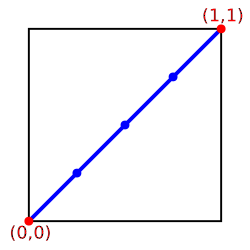

This specification defines SVG Animations, a set of features based
on SMIL for declaratively animating SVG content.
Status of This Document
This section describes the status of this document at the time of its
publication. Other documents may supersede this document. A list of current W3C
publications and the latest revision of this technical report can be found in
the W3C technical reports index at http://www.w3.org/TR/.
This document is the 25 November 2025 Editor’s Draft of SVG Animation.
The purpose of this specification is to separate out SVG's animation
features into a separate document.
Comments on this Editor’s Draft are welcome.
Comments can be sent to www-svg@w3.org,
the public email list for issues related to vector graphics on the Web. This list is
archived and
senders must agree to have their message publicly archived from their
first posting. To subscribe send an email to
www-svg-request@w3.org with
the word subscribe in the subject line.
Publication as a Editor’s Draft does not imply endorsement by the W3C Membership.
This is a draft document and may be updated, replaced or obsoleted by other documents
at any time. It is inappropriate to cite this document as other than work in progress.
A list of current W3C Recommendations and other technical documents can be found at
http://www.w3.org/TR/. W3C publications
may be updated, replaced, or obsoleted by other documents at any time.
SVG supports the ability to change vector graphics over time. SVG content can
be animated in the following ways:
Using SVG's animation elements.
SVG document fragments can describe time-based modifications
to the document's elements. Using the various animation
elements, authors can define motion paths, or interpolate the element's
attributes and style properties. These effects can be chained together
or triggered in response to other events in the document.
Using CSS Animations
[CSSANIMATIONS]. A CSS
module that describes a way for authors to animate the values of
CSS properties over time, using keyframes. The behavior of these
keyframe animations can be controlled by specifying their duration,
number of repeats, and repeating behavior.
Using CSS Transitions
[CSS3TRANSITIONS]. A CSS
module that allows changes to values of CSS properties to occur
smoothly over a specified duration.
Using the SVG DOM. The SVG DOM
is defined based on the DOM4 specification [DOM4].
Every attribute and style sheet setting is
accessible to scripting, and SVG offers a set of additional
DOM interfaces to support efficient animation via scripting.
(See example below.)
The SYMM Working Group, in collaboration with the SVG
Working Group, has authored the SMIL Animation specification
[SMILANIM],
which represents a general-purpose XML animation feature set.
SVG incorporates the animation features defined in the SMIL
Animation specification and provides some SVG-specific
extensions.
An animation element is an element that can be used to animate
the attribute or property value of another element. The following elements
are animation elements: ‘animate’, ‘animateMotion’, ‘animateTransform’ and ‘set’.
SVG is a host language in terms of SMIL Animation and
therefore introduces additional constraints and features as
permitted by that specification. Except for any SVG-specific
rules explicitly mentioned in this specification, the normative
definition for SVG's animation elements and attributes is the
SMIL Animation
specification [SMILANIM].
SVG supports the following three animation elements which are
defined in the SMIL Animation specification:
a convenient shorthand for ‘animate’, which produces a
discrete change to an animated attribute or property.
It is most commonly used with values which do not support
linear interpolation, such as the visibility property
SVG allows any feature from SVG's path data syntax to be
specified in a ‘path’ attribute to the ‘animateMotion’ element
(SMIL Animation only allows a subset of SVG's path data
syntax within a ‘path’ attribute)
SVG allows an ‘animateMotion’ element to
contain a child ‘mpath’ element which
references an SVG ‘path’ element or shape element
as the definition of the motion path
SVG adds a ‘rotate’ attribute to the ‘animateMotion’ to control
whether an object is automatically rotated so that its
x-axis points in the same direction (or opposite direction)
as the directional tangent vector of the motion path
For compatibility with other aspects of the language, SVG
uses URL references via an ‘href’ attribute to
identify the elements which are to be targets of the animations,
as allowed in SMIL 3.0.
SMIL Animation requires that the host language define the
meaning for document begin and the
document end. Since an
‘svg’ is sometimes the root of
the XML document tree and other times can be a component of a
parent XML grammar, the document begin for a given SVG document fragment is defined to be the exact time at which the
‘svg’ element's load event is
triggered. The document end of an SVG document
fragment is the point at which the document fragment has been
released and is no longer being processed by the user agent.
However, nested ‘svg’ elements within an SVG
document do not constitute document fragments in this sense,
and do not define a separate document begin; all times within
the nested SVG fragment are relative to the document time
defined for the root ‘svg’ element.
For SVG, the term presentation time
indicates the position in the timeline relative
to the document begin of a given document
fragment.
2.4. Animation elements example
Example anim01 below
demonstrates each of SVG's four animation elements.
<?xml version="1.0" standalone="no"?>
<svg width="8cm" height="3cm" viewBox="0 0 800 300"
xmlns="http://www.w3.org/2000/svg">
<desc>Example anim01 - demonstrate animation elements</desc>
<rect x="1" y="1" width="798" height="298"
fill="none" stroke="blue" stroke-width="2" />
<!-- The following illustrates the use of the 'animate' element
to animate a rectangles x, y, and width attributes so that
the rectangle grows to ultimately fill the viewport. -->
<rect id="RectElement" x="300" y="100" width="300" height="100"
fill="rgb(255,255,0)" >
<animate attributeName="x" begin="0s" dur="9s"
fill="freeze" from="300" to="0" />
<animate attributeName="y" begin="0s" dur="9s"
fill="freeze" from="100" to="0" />
<animate attributeName="width" begin="0s" dur="9s"
fill="freeze" from="300" to="800" />
<animate attributeName="height" begin="0s" dur="9s"
fill="freeze" from="100" to="300" />
</rect>
<!-- Set up a new user coordinate system so that
the text string's origin is at (0,0), allowing
rotation and scale relative to the new origin -->
<g transform="translate(100,100)" >
<!-- The following illustrates the use of the 'set', 'animateMotion',
'animate' and 'animateTransform' elements. The 'text' element
below starts off hidden (i.e., invisible). At 3 seconds, it:
* becomes visible
* continuously moves diagonally across the viewport
* changes color from blue to dark red
* rotates from -30 to zero degrees
* scales by a factor of three. -->
<text id="TextElement" x="0" y="0"
font-family="Verdana" font-size="35.27" visibility="hidden" >
It's alive!
<set attributeName="visibility" to="visible"
begin="3s" dur="6s" fill="freeze" />
<animateMotion path="M 0 0 L 100 100"
begin="3s" dur="6s" fill="freeze" />
<animate attributeName="fill"
from="rgb(0,0,255)" to="rgb(128,0,0)"
begin="3s" dur="6s" fill="freeze" />
<animateTransform attributeName="transform"
type="rotate" from="-30" to="0"
begin="3s" dur="6s" fill="freeze" />
<animateTransform attributeName="transform"
type="scale" from="1" to="3" additive="sum"
begin="3s" dur="6s" fill="freeze" />
</text>
</g>
</svg>
A URL reference to the element which is the target of this
animation element and which therefore will be modified over
time.
The URL must point to exactly one target element which
is capable of being the target of the given animation element.
If the URL points to multiple target elements, if the given target
element is not capable of being a target of the given animation
element, or if the given target element is not part of the current
document, then the animation element will not affect any target element.
However, the animation element will still operate normally with regard
to its timing properties.
Specifically, TimeEvents are dispatched and the animation
element can be used as syncbase in an identical
fashion to when the URL refers to a valid target element.
If the ‘href’ attribute or the deprecated ‘xlink:href’
attribute is not provided, then the target element will be the immediate
parent element of the current animation element.
The behavior when both ‘href’ and ‘xlink:href’ are
specified is defined by the common handling for deprecated XLink attributes.
Refer to the descriptions of the individual animation
elements for any restrictions on what types of elements can
be targets of particular types of animations.
Specifies the name of the target property or attribute.
Unlike SMIL
Animation, the attributeType
attribute is not supported by SVG.
SVG's animation elements follow the behavior defined for the auto value of attributeType. That is, when determining if
‘attributeName’ corresponds to an attribute name or a CSS property
name, the implementation must first search through the list of CSS
properties for a matching property name.
If no matching property is found, the implementation must search for a
matching attribute on the target element.
When referencing an attribute, an XMLNS prefix may be used to indicate the
XML namespace for the attribute. The prefix will be interpreted in the
scope of the current (i.e., the referencing) animation element.
Otherwise the implementation must use the default XML
namespace for the target element.
Note that, as a result of the behavior, it is not possible to animate
the list of coordinates specified by the ‘x’ and
‘y’ attributes on ‘text’ and ‘tspan’ elements.
This is because ‘x’ and ‘y’ are also CSS properties where they
only accept a single length as a value.
Due to the complex mapping between characters and glyphs, using the
list-based syntax for ‘x’ and ‘y’ to specify
glyph positions does not scale well to anything beyond very simple Latin
text and its use is discouraged.
Authors who nevertheless wish to animate this list of coordinates
may be able to achieve a comparable effect using the ‘dx’
and ‘dy’ attributes instead since these names to not overlap
with CSS properties.
Example
animns01 below shows a namespace prefix being resolved
to a namespace name in the scope of the referencing element, and
that namespace name being used (regardless of the prefix which
happens to be used in the target scope) to identify the
attribute being animated.
<?xml version="1.0" encoding="UTF-8"?>
<svg version="1.1" xmlns="http://www.w3.org/2000/svg">
<title>Demonstration of the resolution of namespaces for animation</title>
<!-- at the point of definition, the QName a:href resolves to the namespace
name "http://www.w3.org/1999/xlink" and the local name "href" -->
<g xmlns:a="http://www.w3.org/1999/xlink">
<animate attributeName="a:href" href="#foo" dur="2s" to="two.png" fill="freeze"/>
</g>
<!-- at the point of use, the namespace name "http://www.w3.org/1999/xlink"
happens to be bound to the namespace prefix 'b' -->
<g xmlns:b="http://www.w3.org/1999/xlink">
<image id="foo" b:href="one.png" x="35" y="50" width="410" height="160"/>
</g>
</svg>
Paced animations assume a notion of distance between the various
animation values defined by the
‘to’, ‘from’, ‘by’ and ‘values’
attributes. Distance is defined only for scalar types (such as
<length>), colors
and the subset of transformation types that are supported by
‘animateTransform’.
In the list of distance functions below, Va and Vb
represent the two values the distance between which is being calculated.
Since paced animation is intended to produce an animation with an even
pace of change, it does not make sense to define distance functions
for all data types. Distance can be usefully defined for types whose
values are n-dimensional vectors (including scalars, which are
1-dimensional vectors). For example, a
<length> value is a scalar
value, and a <color> value
is a 3-dimensional vector. Thus attributes of these types can have paced
animation applied to them. On the other hand, a <dasharray>
(as used by ‘stroke-dasharray’)
is a list of scalars (1-dimensional vectors), and
<points> (as used by
the ‘points’
attribute on a ‘polygon’)
is a list of 2-dimensional vectors. Therefore, these types do not have a
distance function defined and cannot have paced animation applied to them.
The distance functions for types that support paced animation are as follows:
Vi.red is the red component of the Vi color value,
Vi.green is the green component of the Vi color value, and
Vi.blue is the blue component of the Vi color value.
Each of the color component values is usually in the range [0, 1],
where 0 represents none of that color component, and 1 represents
the maximum amount of that color component, in the sRGB gamut
[SRGB]. Since
<color> values
may specify colors outside of the sRGB gamut, these component
values may lie outside the range [0, 1].
Example: animating the fill
property on an ‘ellipse’.
Vi.sx is the x component of the Vi scale transform value, and
Vi.sy is the y component of the Vi scale transform value.
Note that, as when specifying scale transformations in a
<transform-list>, if the
y component of the scale is omitted it is implicitly equal
to the x component.
Transform definitions of type 'rotate',
'skewX' and 'skewY'
Vi.angle is the angle component of the
Vi rotation or skew transform value.
Since the distance function for rotations is not in terms of the
rotation center point components, a paced animation that changes
the rotation center point may not appear to have a paced
movement when the animation is applied.
Distance functions for all other data types are not defined.
If calcMode="paced" is used on an
animation of an attribute or property whose type is not one of
those listed above, the animation effect is undefined.
SVG user agents may choose to
perform the animation as if calcMode="linear",
but this is not required. Authors are recommended not to specify
paced animation on types not listed above.
2.9. Attributes to control the timing of the animation
The following attributes are the animation timing attributes.
They are common to all animation elements and control the timing of the animation,
including what causes the animation to start and end, whether the
animation runs repeatedly, and whether to retain the end state
the animation once the animation ends.
In the syntax specifications that follow, optional white
space is indicated as "S", defined as follows:
S ::= (#x20 | #x9 | #xD | #xA)*
Align with whitespace used in CSS and SVG, adding #xC to S.
A semicolon separated list of begin values. The
interpretation of a list of begin times is detailed in
SMIL Animation's section on
"Evaluation of begin and end time lists".
For SMIL Animation, this describes the element
begin as an offset from an implicit syncbase. For SVG,
the implicit syncbase begin is defined to be relative
to the document begin. Negative begin times are
entirely valid and easy to compute, as long as there is
a resolved document begin time.
Describes a syncbase
and an optional offset from that syncbase. The element
begin is defined relative to the begin or active end of
another animation. A syncbase consists of an ID
reference to another animation element followed by
either begin or end to
identify whether to synchronize with the beginning or
active end of the referenced animation element.
Describes an event and an optional offset that
determine the element begin. The animation begin is
defined relative to the time that the event is raised.
The list of event-symbols available for a given
event-base element is the list of event attributes
available for the given element as defined in the Scripting and Interactivity chapter, with the one difference
that the leading 'on' is removed from the event name
(i.e., the animation event name is 'click', not
'onclick'). A list of all events supported by SVG can
be found in Complete
list of supported events. Details of event-based
timing are described in
SMIL Animation: Unifying Event-based and Scheduled
Timing.
Describes a qualified repeat event. The element
begin is defined relative to the time that the repeat
event is raised with the specified iteration
value.
Describes an accessKey that determines the element
begin. The element begin is defined relative to the
time that the accessKey character is input by the
user.
Describes the element begin as a real-world clock
time. The wallclock time syntax is based upon syntax
defined in Representation of dates and times
[ISO8601].
"indefinite"
The begin of the animation will be determined by a
"beginElement()" method call or a hyperlink targeted to
the element.
Except for any SVG-specific rules explicitly mentioned in
this specification, the normative definition for this
attribute is the SMIL Animation
specification.
In particular, see
SMIL Animation: 'begin' attribute
([SMILANIM], section 3.2.1).
Specifies the length of the simple duration in presentation time. Value
must be greater than 0.
"media"
Specifies the simple duration as the intrinsic
media duration. This is only valid for elements that
define media.
(For SVG's animation elements, if 'media' is specified, the
attribute will be ignored.)
"indefinite"
Specifies the simple duration as indefinite.
If the animation does not have a ‘dur’ attribute, the simple
duration is indefinite. Note that interpolation will not
work if the simple duration is indefinite (although this
may still be useful for ‘set’ elements). Except
for any SVG-specific rules explicitly mentioned in this
specification, the normative definition for this
attribute is the SMIL Animation
specification.
In particular, see
SMIL Animation: 'dur' attribute
([SMILANIM], section 3.2.1).
A value of 'indefinite'
specifies that the end of the animation will be
determined by an endElement method call (the animation
DOM methods are described in IDL).
Except for any SVG-specific rules explicitly mentioned
in this specification, the normative definition for this
attribute is the SMIL Animation
specification.
In particular, see
SMIL Animation: 'end' attribute
([SMILANIM], section 3.3.2).
Specifies the length of the minimum or maximum value of the
active duration, measured in local time.
Value must be greater than 0.
"media"
Specifies the minimum value of the active duration
as the intrinsic media duration. This is only valid for
elements that define media. (For SVG's animation elements,
if 'media' is specified, the
attribute will be ignored.)
The initial value for ‘min’ is '0' and
there is no initial value for ‘max’. In both cases, this does not
constrain the active duration at all.
The animation can be restarted at any
time. This is the default value.
whenNotActive
The animation can only be restarted when it is not
active (i.e. after the active end). Attempts to restart
the animation during its active duration are
ignored.
never
The element cannot be restarted for the remainder
of the current simple duration of the parent time
container. (In the case of SVG, since the parent time
container is the SVG document fragment, then the
animation cannot be restarted for the remainder of the
document duration.)
Except for any SVG-specific rules explicitly mentioned in
this specification, the normative definition for this
attribute is the
SMIL Animation specification.
In particular, see SMIL Animation: 'restart' attribute
([SMILANIM], section 3.3.7).
This is a (base 10) "floating point" numeric value
that specifies the number of iterations. It can include
partial iterations expressed as fraction values. A
fractional value describes a portion of the
simple duration. Values must be greater than
0.
indefinite
The animation is defined to repeat indefinitely
(i.e. until the document ends).
Except for any SVG-specific rules explicitly mentioned in
this specification, the normative definition for this
attribute is the
SMIL Animation specification.
In particular, see SMIL Animation: 'repeatCount' attribute
([SMILANIM], section 3.3.1).
Specifies the duration in presentation time to
repeat the animation function
f(t).
"indefinite"
The animation is defined to repeat indefinitely
(i.e. until the document ends).
Except for any SVG-specific rules explicitly mentioned in
this specification, the normative definition for this
attribute is the
SMIL Animation specification.
In particular, see SMIL Animation: 'repeatDur' attribute
([SMILANIM], section 3.3.1).
Name
Value
Initial value
Animatable
fill
freeze | remove
remove
no
This attribute can have the following values:
freeze
The animation effect
F(t) is defined to freeze the effect value at the
last value of the active duration. The animation effect
is "frozen" for the remainder of the document duration
(or until the animation is restarted - see
SMIL Animation: Restarting animation).
remove
The animation effect is removed (no longer applied)
when the active duration of the animation is over.
After the active end of the animation, the animation no
longer affects the target (unless the animation is
restarted - see
SMIL Animation: Restarting animation).
Except for any SVG-specific rules explicitly mentioned in
this specification, the normative definition for this
attribute is the
SMIL Animation specification.
In particular, see SMIL Animation: 'fill' attribute
([SMILANIM], section 3.3.5).
The SMIL Animation
specification [SMILANIM] defines the detailed processing
rules associated with the above attributes. Except for any SVG-specific
rules explicitly mentioned in this specification, the SMIL Animation
specification is the normative definition of the processing rules for
the above attributes.
2.9.1. Clock values
Clock values have the same syntax as in
SMIL Animation
specification [SMILANIM]. The grammar for
clock values is repeated here:
Clock-val ::= Full-clock-val | Partial-clock-val
| Timecount-val
Full-clock-val ::= Hours ":" Minutes ":" Seconds ("." Fraction)?
Partial-clock-val ::= Minutes ":" Seconds ("." Fraction)?
Timecount-val ::= Timecount ("." Fraction)? (Metric)?
Metric ::= "h" | "min" | "s" | "ms"
Hours ::= DIGIT+; any positive number
Minutes ::= 2DIGIT; range from 00 to 59
Seconds ::= 2DIGIT; range from 00 to 59
Fraction ::= DIGIT+
Timecount ::= DIGIT+
2DIGIT ::= DIGIT DIGIT
DIGIT ::= [0-9]
For Timecount values, the default metric suffix is "s" (for
seconds). No embedded white space is allowed in clock values,
although leading and trailing white space characters will be
ignored.
2.10. Attributes that define animation values over time
The following attributes are the animation value attributes.
They are common to elements ‘animate’, ‘animateMotion’ and ‘animateTransform’. These
attributes define the values that are assigned to the target
attribute or property over time. The attributes below provide
control over the relative timing of keyframes and the
interpolation method between discrete values.
Attribute definitions:
Name
Value
Initial value
Animatable
calcMode
discrete | linear | paced | spline
(none)
no
Specifies the interpolation mode for the animation. This
can take any of the following values. The default mode is
'linear', however if the attribute does not support
linear interpolation (e.g. for strings), the
‘calcMode’ attribute is ignored and discrete
interpolation is used.
discrete
This specifies that the animation function will
jump from one value to the next without any
interpolation.
linear
Simple linear interpolation between values is used
to calculate the animation function. Except for ‘animateMotion’, this
is the default ‘calcMode’.
paced
Defines interpolation to produce an even pace of
change across the animation. This is only supported for the
data types for which there is an appropriate distance function
defined, which includes only scalar numeric types plus the
types listed in Paced animation and complex types.
If 'paced' is specified, any
‘keyTimes’ or ‘keySplines’ will
be ignored. For ‘animateMotion’, this
is the default ‘calcMode’.
Authors are discouraged from using paced animation on types
that do not have a distance function defined, due to its
unpredictable behavior in some user agents.
spline
Interpolates from one value in the
‘values’ list to the next according to a
time function defined by a cubic Bézier spline.
The points of the spline are defined in the
‘keyTimes’ attribute, and the control points
for each interval are defined in the
‘keySplines’ attribute.
Except for any SVG-specific rules explicitly mentioned in
this specification, the normative definition for this
attribute is the
SMIL Animation specification.
In particular, see SMIL Animation: 'calcMode' attribute
([SMILANIM], section 3.2.3).
Name
Value
Initial value
Animatable
values
(see below)
(none)
no
The ‘values’ attribute specifies a sequence of values to use over
the course of the animation.
The attribute is parsed as follows:
Let attribute be the value of the ‘values’
attribute.
Let values be a list of strings formed by splitting
attribute at each U+003B SEMICOLON character.
Remove the final value in values if it is the empty string.
Parse each value in values using the rules for parsing
the attribute identified by the ‘href’, and
‘attributeName’ attributes.
Except for
any SVG-specific rules explicitly mentioned in this
specification, the normative definition for this attribute
is the
SMIL Animation specification.
In particular, see SMIL Animation: 'values' attribute
([SMILANIM], section 3.2.2).
A semicolon-separated list of time values used to control
the pacing of the animation. Each time in the list
corresponds to a value in the ‘values’
attribute list, and defines when the value is used in the
animation function.
Each time value in the
‘keyTimes’ list is specified as a floating
point value between 0 and 1 (inclusive), representing a
proportional offset into the simple duration of the
animation element.
If the last semicolon separator is followed by either just white space
or no more characters, ignore both the separator and the trailing
white space.
For animations specified with a ‘values’ list, the
‘keyTimes’ attribute if specified must have exactly as many
values as there are in the ‘values’ attribute. For from/to/by
animations, the ‘keyTimes’ attribute if specified must have
two values.
Each successive time value must be greater than or equal
to the preceding time value.
The ‘keyTimes’ list semantics depends upon
the interpolation mode:
For linear and spline animation, the first
time value in the list must be 0, and the last time
value in the list must be 1. The key time
associated with each value defines when the value is
set; values are interpolated between the key times.
For discrete animation, the first time value in the
list must be 0. The time associated with each value
defines when the value is set; the animation function
uses that value until the next time defined in
‘keyTimes’.
If the interpolation mode is 'paced', the
‘keyTimes’ attribute is ignored.
If there are any errors in the ‘keyTimes’
specification (bad values, too many or too few values),
the document fragment is in error (see error
processing).
If the simple duration is indefinite, any
‘keyTimes’ specification will be
ignored.
Because paced animation interpolation is unspecified for some
value types, authors are encouraged to use
'linear' animation interpolation with
calculated ‘keyTimes’
to achieve particular interpolation behavior for these types.
Except for any SVG-specific rules explicitly mentioned
in this specification, the normative definition for this
attribute is the
SMIL Animation specification.
In particular, see SMIL Animation: 'keyTimes' attribute
([SMILANIM], section 3.2.3).
A set of Bézier control points associated with
the ‘keyTimes’ list, defining a cubic
Bézier function that controls interval pacing. The
attribute value is a semicolon-separated list of control
point descriptions.
If the last semicolon separator is followed by either just white space
or no more characters, ignore both the separator and the trailing
white space.
Each control point description is a set
of four values: x1 y1 x2 y2, describing the
Bézier control points for one time segment. Note:
SMIL
allows these values to be separated either by commas with
optional whitespace, or by whitespace alone. The
‘keyTimes’ values that define the associated
segment are the Bézier "anchor points", and the
‘keySplines’ values are the control points.
Thus, there must be one fewer sets of control points than
there are ‘keyTimes’.
The values must all be in the range 0 to 1.
This attribute is ignored unless the ‘calcMode’
is set to 'spline'.
If there are any errors in the ‘keySplines’
specification (bad values, too many or too few values), the
document fragment is in error (see error
processing).
Except for any SVG-specific rules explicitly mentioned in
this specification, the normative definition for this
attribute is the
SMIL Animation specification.
In particular, see SMIL Animation: 'keySplines' attribute
([SMILANIM], section 3.2.3).
Name
Value
Initial value
Animatable
from,
to,
by
(see below)
(none)
no
The ‘from’ and ‘to’ attributes specify the starting
and ending value of the animation, while the ‘by’ attribute
specifies a relative offset value for the animation.
All three attributes must be parsed using the rules for parsing
the attribute identified by the ‘href’ and
‘attributeName’ attributes.
The SMIL Animation specification [SMILANIM]
defines the detailed processing
rules associated with the above attributes. Except for any
SVG-specific rules explicitly mentioned in this
specification, the SMIL Animation specification is the normative definition of
the processing rules for the above attributes.
The animation values specified in the animation element
must be legal values for the specified attribute. Leading and
trailing white space, and white space before and after
semicolon separators, will be ignored.
All values specified must be legal values for the
specified attribute (as defined in the associated namespace).
If any values are not legal, the document fragment is in
error (see error
processing).
If a list of values is used, the animation will apply the
values in order over the course of the animation. If a list
of ‘values’ is specified, any ‘from’,
‘to’ and ‘by’ attribute values are ignored.
The processing rules for the variants of
from/by/to animations are described in
Animation function values with the following exception.
In order to provide behavior that is intuitive and consistent
between discrete animations with an explicitly specified
‘from’ attribute (e.g. "from-to animation") and those
where the underlying value is used (e.g. "to animation"), the
behavior of discrete to-animation in SVG deviates from the
definition in SMIL Animation.
As with a discrete from-to animation, a discrete to animation
will set the underlying value for the first half of the simple
duration (or, if a ‘keyTimes’ list is provided, until the
simple duration specified by the second value in the ‘keyTimes’
list) and the ‘to’ value for the remainder of the simple
duration.
The following figure illustrates the interpretation of the
‘keySplines’ attribute. Each diagram illustrates
the effect of ‘keySplines’ settings for a single
interval (i.e. between the associated pairs of values in the
‘keyTimes’ and ‘values’ lists.). The
horizontal axis can be thought of as the input value for the
unit progress of interpolation within the interval -
i.e. the pace with which interpolation proceeds along the
given interval. The vertical axis is the resulting value for
the unit progress, yielded by the function that
the ‘keySplines’ attribute defines.
Another way of describing
this is that the horizontal axis is the input unit
time for the interval, and the vertical axis is the
output unit time. See also the section
Timing and real-world clock times.
Examples of keySplines
 keySplines="0 0 1 1"
(the default)
keySplines=".5 0 .5 1"
keySplines="0 .75 .25 1"
keySplines="1 0 .25 .25"
To illustrate the calculations, consider the simple example:
At the end of the first repetition, the rectangle has a
width of 30 pixels. At the end of the second repetition, the
rectangle has a width of 40 pixels. At the end of the fifth
repetition, the rectangle has a width of 70 pixels.
Controls whether or not the animation is additive.
replace
Specifies that the animation will override the
underlying value of the attribute and other lower
priority animations. This is the default, however the
behavior is also affected by the animation value
attributes ‘by’ and ‘to’, as described in
SMIL Animation: How from, to and by attributes affect
additive behavior.
sum
Specifies that the animation will add to the
underlying value of the attribute and other lower
priority animations.
Except for any SVG-specific rules explicitly mentioned
in this specification, the normative definition for this
attribute is the
SMIL Animation specification.
In particular, see SMIL Animation: 'additive' attribute
([SMILANIM], section 3.3.6).
Name
Value
Initial value
Animatable
accumulate
none | sum
none
no
Controls whether or not the animation is
cumulative.
none
Specifies that repeat iterations are not
cumulative. This is the default.
sum
Specifies that each repeat iteration after the
first builds upon the last value of the previous
iteration.
This attribute is ignored if the target attribute value
does not support addition, or if the animation element
does not repeat.
Cumulative animation is not defined for "to
animation".
This attribute will be ignored if the animation function
is specified with only the ‘to’
attribute.
Except for any SVG-specific rules explicitly mentioned
in this specification, the normative definition for this
attribute is the
SMIL Animation specification.
In particular, see SMIL Animation: 'accumulate' attribute
([SMILANIM], section 3.3.1).
2.12. Inheritance
SVG allows both attributes and properties to be animated. If
a given attribute or property is inheritable by descendants,
then animations on a parent element such as a ‘g’ element has the effect of
propagating the attribute or property animation values to
descendant elements as the animation proceeds; thus, descendant
elements can inherit animated attributes and properties from
their ancestors.
2.13. The ‘animate’ element
The ‘animate’ element is
used to animate a single attribute or property over time.
This example makes a rectangle repeatedly fade away over 5 seconds:
Except for any SVG-specific rules explicitly mentioned in this
specification, the normative definition for this element is the
SMIL Animation specification.
In particular, see SMIL Animation: 'animate' element
([SMILANIM], section 4.1).
The ‘set’ element provides
a simple means of just setting the value of an attribute for a
specified duration. It supports all attribute types, including
those that cannot reasonably be interpolated, such as string
and boolean values. The ‘set’
element is non-additive. The additive and accumulate attributes
are not allowed, and will be ignored if specified.
Except for any SVG-specific rules explicitly mentioned in this
specification, the normative definition for this element is the
SMIL Animation specification.
In particular, see SMIL Animation: 'set' element
([SMILANIM], section 4.2).
The motion path, expressed in the same format and
interpreted the same way as the d geometric property for the
‘path’ element. The effect
of a motion path animation is to add a supplemental
transformation matrix onto the CTM for the referenced
object which causes a translation along the x- and y-axes
of the current user coordinate system by the computed X and
Y values computed over time.
‘keyPoints’ takes a
semicolon-separated list of floating point values between 0
and 1 and indicates how far along the motion path the
object shall move at the moment in time specified by
corresponding ‘keyTimes’
value. Distance calculations use the user agent's distance along the
path algorithm. Each progress value in the list
corresponds to a value in the ‘keyTimes’
attribute list.
If a list of ‘keyPoints’ is specified, there
must be exactly as many values in the
‘keyPoints’ list as in the ‘keyTimes’
list.
If the last semicolon separator is followed by either just white space
or no more characters, ignore both the separator and the trailing
white space.
If there are any errors in the ‘keyPoints’
specification (bad values, too many or too few values),
then the document is in error (see Error
processing).
The ‘rotate’ attribute post-multiplies a supplemental
transformation matrix onto the CTM of the target element to apply a
rotation transformation about the origin of the current user
coordinate system. The rotation transformation is applied after the
supplemental translation transformation that is computed due to the
‘path’ attribute.
auto
Indicates that the object is rotated over time by the angle of
the direction (i.e., directional tangent vector) of the motion path.
auto-reverse
Indicates that the object is rotated over time by the angle of the
direction (i.e., directional tangent vector) of the motion path plus
180 degrees.
For ‘animateMotion’, the specified values for ‘from’,
‘by’, ‘to’ and ‘values’ consists of x, y coordinate
pairs, with a single comma and/or white space separating the x coordinate
from the y coordinate. For example, from="33,15"
specifies an x coordinate value of 33 and
a y coordinate value of 15.
If provided, the ‘values’ attribute must consists of a list of
x, y coordinate pairs. Coordinate values are separated by at least one
white space character or a comma. Additional white space around the
separator is allowed. For example, values="10,20;30,20;30,40"
or values="10mm,20mm;30mm,20mm;30mm,40mm".
Each coordinate represents a <length>.
Attributes ‘from’, ‘by’, ‘to’ and ‘values’
specify a shape on the current canvas which represents the motion path.
Two options are available which allow definition of a motion
path using any of SVG's path
data commands:
the ‘path’ attribute defines a motion path directly on
‘animateMotion’ element using any of SVG's
path data commands.
the ‘mpath’ sub-element provides the ability to reference an
external ‘path’ element or shape element as the
definition of the motion path.
If the ‘mpath’ sub-element refers to a shape element,
the motion path is defined by the equivalent path of the
shape element.
Note that SVG's path data
commands can only contain values in local coordinate system, whereas ‘from’,
‘by’, ‘to’ and ‘values’ can specify coordinates in
local coordinate system or using unit identifiers. See Units.
The various (x,y) points of the shape provide a supplemental
transformation matrix onto the CTM for the referenced object
which causes a translation along the x- and y-axes of the current
user coordinate system by the (x,y) values of the shape computed
over time. Thus, the referenced object is translated over time
by the offset of the motion path relative to the origin of the
current user coordinate system. The supplemental transformation is
applied on top of any transformations due to the target element's
transform property or any animations on that attribute due
to ‘animateTransform’ elements on the target element.
The ‘additive’ and ‘accumulate’ attributes apply
to ‘animateMotion’ elements. Multiple ‘animateMotion’
elements all simultaneously referencing the same target element can
be additive with respect to each other; however, the transformations
which result from the ‘animateMotion’ elements are always
supplemental to any transformations due to the target element's
transform property or any ‘animateTransform’
elements.
The default calculation mode (‘calcMode’) for
‘animateMotion’ is "paced". This will produce constant
velocity motion along the specified path. Note that while
animateMotion elements can be additive, it is important to observe
that the addition of two or more "paced" (constant velocity)
animations might not result in a combined motion animation with
constant velocity.
When a path is combined with "discrete", "linear"
or "spline" ‘calcMode’ settings, and if attribute
‘keyPoints’ is not provided, the number of values is
defined to be the number of points defined by the path, unless
there are "move to" commands within the path. A "move to" command
within the path (i.e. other than at the beginning of
the path description) A "move to" command does not
count as an additional point when dividing up the duration, or
when associating ‘keyTimes’, ‘keySplines’
and ‘keyPoints’ values. When a path is
combined with a "paced" ‘calcMode’ setting, all "move to"
commands are considered to have 0 length (i.e. they always happen
instantaneously), and is not considered in computing the pacing.
For more flexibility in controlling the velocity along the
motion path, the ‘keyPoints’ attribute provides the
ability to specify the progress along the motion path for
each of the ‘keyTimes’ specified values. If specified,
‘keyPoints’ causes ‘keyTimes’ to apply to the values
in ‘keyPoints’ rather than the points specified in the
‘values’ attribute array or the points on the ‘path’
attribute.
The override rules for ‘animateMotion’ are as follows.
Regarding the definition of the motion path, the ‘mpath’ element
overrides the ‘path’ attribute, which overrides ‘values’,
which overrides ‘from’, ‘by’ and ‘to’. Regarding
determining the points which correspond to the ‘keyTimes’
attributes, the ‘keyPoints’ attribute overrides ‘path’,
which overrides ‘values’, which overrides ‘from’, ‘by’
and ‘to’.
At any time t within a motion path animation of
duration dur, the computed coordinate (x,y) along the
motion path is determined by finding the point (x,y) which is
t/dur distance along the motion path using the user
agent's distance along
the path algorithm.
The following example demonstrates the supplemental
transformation matrices that are computed during a motion path
animation.
Example animMotion01 shows
a triangle moving along a motion path.
<?xml version="1.0" standalone="no"?>
<svg width="5cm" height="3cm" viewBox="0 0 500 300"
xmlns="http://www.w3.org/2000/svg">
<desc>Example animMotion01 - demonstrate motion animation computations</desc>
<rect x="1" y="1" width="498" height="298"
fill="none" stroke="blue" stroke-width="2" />
<!-- Draw the outline of the motion path in blue, along
with three small circles at the start, middle and end. -->
<path id="path1" d="M100,250 C 100,50 400,50 400,250"
fill="none" stroke="blue" stroke-width="7.06" />
<circle cx="100" cy="250" r="17.64" fill="blue" />
<circle cx="250" cy="100" r="17.64" fill="blue" />
<circle cx="400" cy="250" r="17.64" fill="blue" />
<!-- Here is a triangle which will be moved about the motion path.
It is defined with an upright orientation with the base of
the triangle centered horizontally just above the origin. -->
<path d="M-25,-12.5 L25,-12.5 L 0,-87.5 z"
fill="yellow" stroke="red" stroke-width="7.06" >
<!-- Define the motion path animation -->
<animateMotion dur="6s" repeatCount="indefinite" rotate="auto" >
<mpath href="#path1"/>
</animateMotion>
</path>
</svg>
The ‘animateTransform’ element animates a transformation attribute
on a target element, thereby allowing animations to control translation,
scaling, rotation and/or skewing.
This section should talk about the transform property.
The ‘values’ attribute for the ‘animateTransform’ element
consists of a semicolon-separated list of values, where each individual value
is expressed as described above for ‘from’, ‘by’ and ‘to’.
The animation effect for ‘animateTransform’ is post-multiplied to the
underlying value for additive ‘animateTransform’ animations (see below)
instead of added to the underlying value, due to the specific behavior of
‘animateTransform’.
From-to, from-by and by animations are defined
in SMIL to be equivalent to a corresponding values animation. See
the Animation function values
section of SMIL Animation ([SMILANIM], section 3.2.2).
However, to animations are a mixture of additive and non-additive
behavior, as described in the How
from, to and by attributes affect additive behavior section of SMIL
Animation ([SMILANIM], section 3.3.6).
To animations provide specific functionality to get a smooth
change from the underlying value to the ‘to’ attribute value, which
conflicts mathematically with the requirement for additive transform
animations to be post-multiplied. As a consequence, in SVG 1.1 the behavior of
to animations for ‘animateTransform’ is undefined. Authors
are suggested to use from-to, from-by, by or
values animations to achieve any desired transform animation.
When an animation is active, the effect of non-additive
‘animateTransform’ (i.e., additive="replace")
is to replace the given attribute's value with the transformation defined by
the ‘animateTransform’. The effect of additive (i.e.,
additive="sum") is to post-multiply the
transformation matrix corresponding to the transformation defined by this
‘animateTransform’.
In the code snippet above, because the both animations have
additive="replace", the first
animation overrides the transformation on the rectangle itself
and the second animation overrides the transformation from the
first animation; therefore, at time 5 seconds, the visual
result of the above two animations would be equivalent to the
following static rectangle:
In this code snippet, because the both animations have
additive="sum", the first animation
post-multiplies its transformation to any transformations on
the rectangle itself and the second animation post-multiplies
its transformation to any transformation from the first
animation; therefore, at time 5 seconds, the visual result of
the above two animations would be equivalent to the following
static rectangle:
The zero value used when performing a by animation
with type="scale" is indeed 0.
Thus, performing the following animation causes the rectangle to be
invisible at time 0s (since the animated transform list value is
'scale(0)'), and be scaled back
to its original size at time 5s (since the animated transform list value is
'scale(1)'):
When a transform animation has accumulate='sum',
the accumulation that occurs for each completed repetition of the animation
is computed on the values specified in the ‘animateTransform’ element's
animation value attributes (i.e.,
‘values’, ‘from’, ‘to’ and ‘by’) and not on the
transformation matrix that these values represent.
For example, in the following
code snippet, 3 is added to the scale value at the start of each repetition:
The following graph and table shows the animated transform value on
the ‘rect’ over the course of the animation:
Time
Value
0s
scale(2)
1s
scale(2.25)
2s
scale(2.5)
3s
scale(2.75)
4s
scale(5)
5s
scale(5.25)
6s
scale(5.5)
7s
scale(5.75)
8s
scale(8)
9s
scale(8.25)
10s
scale(8.5)
11s
scale(8.75)
12s
scale(9)
Transform item types that can have multiple values – 'translate',
'scale' and 'rotate' – are
treated as vectors and accumulation is performed with vector addition. Optional values that
are omitted are taken to have their usual implied value: 1 for
the <sy> component of a 'scale'
and 0 for the <tx> component
of a 'translate' and the <cx cy>
components of a 'rotate'.
For example, consider the following code snippet, which has a cumulative transform
animation of type 'rotate':
At time 1 second, the animated value of transform on the ‘rect’
will jump from 'rotate(10 30 40)' to 'rotate(10 60 80)',
because the effect of the accumulation is to take the value at the end of the first repetition,
'10 30 40', and add to it the value at simple duration t = 0s, which
is '0 30 40'.
Each attribute or property within this specification
indicates whether or not it can be animated by SVG's animation
elements. Animatable attributes and properties are designated
as follows:
Animatable: yes.
whereas attributes and properties that cannot be animated are designated:
Animatable: no.
Some properties are defined as being animatable but only for non-additive animations:
Animatable: yes (non-additive).
SVG has a number of different data types used
for its various supported attributes and properties. For those
attributes and properties that can be animated, the following
table indicates which animation elements can be used to animate
each of the basic data types. If a given attribute or property
can take values of keywords (which are not additive) or numeric
values (which are additive), then additive animations are
possible if the subsequent animation uses a numeric value even
if the base animation uses a keyword value; however, if the
subsequent animation uses a keyword value, additive animation
is not possible.
All other data types used in animatable attributes and
properties
no
yes
yes
no
Any deviation from the above table or other special note
about the animation capabilities of a particular attribute or
property is included in the section of the specification where
the given attribute or property is defined.
The above SVG file contains a single graphics element, a
text string that says "SVG". The animation loops for 5 seconds.
The text string starts out small and transparent and grows to
be large and opaque. Here is an explanation of how this example
works:
The onload="StartAnimation(evt)" attribute
indicates that, once the document has been fully loaded and
processed, invoke ECMAScript function
StartAnimation.
The ‘script’ element defines the ECMAScript which makes
the animation happen. The StartAnimation()
function is only called once to give a value to global
variable text_element and to make the initial
call to ShowAndGrowElement().
ShowAndGrowElement() is called every 50
milliseconds and resets the transform and
‘style’ attributes on the text element to new
values each time it is called. At the end of
ShowAndGrowElement, the function tells the
ECMAScript engine to call itself again after 50 more
milliseconds.
The ‘g’ element shifts the coordinate system so that the
origin is shifted toward the lower-left of the viewing area.
It also defines the fill color and font-size to use when
drawing the text string.
The ‘text’ element contains the text string and is the
element whose attributes get changed during the
animation.
If scripts are modifying the same attributes or properties
that are being animated by SVG's
animation elements,
the scripts modify the base value for the animation. If a base
value is modified while an animation element is animating the
corresponding attribute or property, the animations are
required to adjust dynamically to the new base value.
If a script is modifying a property on the override style
sheet at the same time that an animation element is
animating that property, the result is
implementation-dependent; thus, it is recommended that this be
avoided.
4. Extensions to SVG 2
This specification extends the definitions in SVG 2 [[SVG2]] in the following ways.
4.1. Extensions to the ‘svg’ element
SVG 2 Requirement:
Should support the playbackorder attribute to inform UA to not display controls to seek backwards.
To start animations before the SVG document is fully loaded (useful for large SVG documents).
Owner:
Cyril
Attribute definitions:
Name
Value
Initial value
Animatable
playbackorder
forwardonly | all
all
no
Indicates whether it is possible to seek backwards in the document. In
earlier versions of SVG there was no need to put restrictions on the
direction of seeking but with the newly introduced facilities for
long-running documents there is sometimes a need to restrict this.
If ‘playbackorder’ is set to
'forwardonly', the content will likely
contain scripts that destroy resources, thus seeking back in the
document fragment's timeline may result in missing content.
If ‘playbackorder’ is
'forwardonly', the content should not
provide a way, through hyperlinking or script, of seeking backwards in
the timeline. Similarly the UA should disable any controls it may
provide in the user interface for seeking backwards. Content with
playbackorder="forwardonly"
that provides a mechanism for seeking backwards in time may result in
undefined behavior or a document that is in error.
Can't we define this so that there is no undefined
behavior?
Attribute values have the following meanings:
'forwardonly'
This file is intended to be played only in the forward direction, sequentially, therefore
seeking backwards should not be allowed.
'all'
Indicates that the document is authored appropriately for seeking in both directions.
By default, the timeline is initialized when the document
fragment's load
event is fired but for progressively loaded animations, the author may set
this attribute to 'loadend', thus allowing
the timeline to begin as the document loads, rather than waiting until the
complete document is loaded.
Attribute values have the following meanings:
'loadend'
The document fragment's timeline starts the moment the
load event for
the outermost svg element is triggered.
'loadbegin'
The document's timeline starts at the moment the
outermost svg element's start-tag (as defined in
XML
1.0 [XML10] or HTML
[HTML] when using the HTML parser) is
fully parsed.
4.2. Extensions to conditional processing elements
Below are the DOM interfaces for the elements defined in this chapter.
In addition, TimeEvent, which is
from SMIL Animation,
is included here for easy reference.
This event is raised when the element local timeline begins
to play. It will be raised each time the element begins the
active duration (i.e. when it restarts, but not when it
repeats). It may be raised both in the course of normal
(i.e. scheduled or interactive) timeline play, as well as
in the case that the element was begun with the
beginElement or
beginElementAt methods. Note that if an
element is restarted while it is currently playing, the
element will raise an end event and another begin event, as
the element restarts.
Bubbles: No
Cancelable: No
Context Info: None
endEvent
This event is raised at the active end of the element. Note
that this event is not raised at the simple end of each
repeat. This event may be raised both in the course of
normal (i.e. scheduled or interactive) timeline play, as
well as in the case that the element was ended with the
endElement or endElementAt
methods. Note that if an element is restarted while it is
currently playing, the element will raise an end event and
another begin event, as the element restarts.
Bubbles: No
Cancelable: No
Context Info: None
repeatEvent
This event is raised when an element local timeline
repeats. It will be raised each time the element repeats,
after the first iteration.
The event provides a numerical indication of which repeat
iteration is beginning. The value is a 0-based integer, but
the repeat event is not raised for the first iteration and
so the observed values of the detail attribute will be
>= 1.
The view attribute identifies the Window
from which the event was generated.
detail (readonly long)
Specifies some detail information about the Event, depending on the type
of the event. For this event type, indicates the repeat number for the
animation.
The initTimeEvent method is used to initialize the value of a
TimeEvent created with document.createEvent(). This
method may only be called before the TimeEvent has been dispatched
via the dispatchEvent method, though it may be called multiple times
during that phase if necessary. If called multiple times, the final
invocation takes precedence.
Unlike other SVG DOM interfaces, the SVG DOM does not specify
convenience DOM properties corresponding to the various language
attributes on SVG's animation elements. Specification of these
convenience properties in a way that will be compatible with future
versions of SMIL Animation is expected in a future version of SVG. The
current method for accessing and modifying the attributes on the
animation elements is to use the standard getAttribute,
setAttribute, getAttributeNS and
setAttributeNS defined in
DOM4
[DOM4].
SMIL Animation supports several methods for controlling the behavior of
animation: beginElement(), beginElementAt(),
endElement() and endElementAt(). These methods
are used to begin and end the active duration of an element. Authors can
(but are not required to) declare the timing to respond to the DOM using
the following syntax:
If a DOM method call is made to begin or end the element (using
beginElement(), beginElementAt(),
endElement() or endElementAt()), each method call
creates a single instance time (in the appropriate instance times list).
These times are then interpreted as part of the semantics of lists of
times, as described in
Evaluation of begin and end time lists.
The instance time associated with a beginElement() or
endElement() call is the current presentation time at the
time of the DOM method call.
The instance time associated with a beginElementAt() or
endElementAt() call is the current presentation time at the
time of the DOM method call, plus or minus the specified offset.
The element which is being animated. If no target element is being animated (for example, because the URL in 'animate/href' does not match a valid element) the value returned is null.
Returns the begin time, in seconds, for this animation element's current
interval, if it exists, regardless of whether the interval has begun yet.
If there is no current interval, then a DOMException with code
INVALID_STATE_ERR is thrown.
Returns
The start time, in seconds, of this animation element's current
interval.
The animation element does not
have a current interval.
float getCurrentTime()
Returns the current time in seconds relative to time zero for the given
time container.
Returns
The current time in seconds relative to time zero for the given
time container.
float getSimpleDuration()
Returns the number of seconds for the simple duration for this animation.
If the simple duration is undefined (e.g., the end time is indefinite),
then an exception is raised.
Returns
number of seconds for the simple duration for this animation.
The simple duration is not
determined on the given element.
undefined beginElement()
Creates a begin instance time for the current time. The new instance
time is added to the begin instance times list.
The behavior of this method is equivalent to beginElementAt(0).
undefined beginElementAt(float offset)
Creates a begin instance time for the current time plus the specified
offset. The new instance time is added to the
begin instance times list.
Parameters
float offset
The offset from the current document time, in seconds, at
which to begin the element.
undefined endElement()
Creates an end instance time for the current time. The new instance time is added to the
end instance times list.
The behavior of this method is equivalent to endElementAt(0).
undefined endElementAt(float offset)
Creates a end instance time for the current time plus the specified
offset. The new instance time is added to the
end instance times list.
Parameters
float offset
The offset from the current document time, in seconds, at
which to end the element.
The animationsPaused
method returns whether SVG animation timeline has been paused.
When animationsPaused() is called, true is returned if the timeline that
controls SVG animations for the SVG document fragment that the
‘svg’ element in has been paused by
pauseAnimations;
otherwise, false is returned.
The getCurrentTime and
setCurrentTime methods
are used to get and set the current time of the timeline that controls
SVG animations. When getCurrentTime() is called, the following steps are run:
This is the case, for example, if the outermost svg element
has its ‘timelinebegin’ attribute set to 'loadend'
and the load event has not yet fired.
Otherwise, the timeline for the current SVG document fragment has begun.
Return the current time in seconds relative to the start time of the timeline.
When setCurrentTime(seconds) is called, the following steps are run:
If the timeline for the current SVG document fragment has begun, then
the timeline's current time (in seconds, relative to the start time of the
timeline) is set to seconds.
Otherwise, the timeline has not begun. seconds is recorded on
the current SVG document fragment as the time to be seeked to
once the timeline has begun. If multiple calls to
setCurrentTime are made
before the timeline has begun, the most recent call's time will be used to
seek the timeline once it begins.
DOM4,
A. van Kesteren, A. Gregor, Ms2ger, A. Russell, R. Berjon, eds.
World Wide Web Consortium, 04 February 2014.
This edition of DOM4 is http://www.w3.org/TR/2014/WD-dom-20140204/.
The latest edition of DOM4 is available at
http://www.w3.org/TR/dom/.
SMIL Animation,
P. Schmitz, A. Cohen.
World Wide Web Consortium, 04 September 2001.
This edition of SMIL Animation is http://www.w3.org/TR/2001/REC-smil-animation-20010904/.
The latest edition of SMIL Animation is available at
http://www.w3.org/TR/smil-animation/.
[SRGB]
IEC 61966-2-1/Amd 1:2003
: Multimedia systems and equipment — Colour measurement and management — Part 2-1: Colour management — Default RGB colour space — sRGB,
International Electrotechnical Commission, 2003.
Available at https://webstore.iec.ch/publication/6168.
See also http://www.color.org/chardata/rgb/srgb.xalter
for technical data and color profiles.
[SVG2]
Scalable Vector Graphics (SVG) 2,
N. Andronikos, T. Bah, A. Bellamy-Royds, B. Birtles, C. Concolato, E. Dahlström, C. Lilley, C. McCormack, D. Schepers, D. Schulze, R. Schwerdtfeger, S. Takagi, J. Watt, eds.
World Wide Web Consortium, 09 April 2015.
This edition of SVG 2 is http://www.w3.org/TR/2015/WD-SVG2-20150409/.
The latest edition of SVG 2 is available at http://www.w3.org/TR/SVG2/.
[XML10]
Extensible Markup Language (XML) 1.0 (Fifth Edition),
T. Bray, J. Paoli, C. M. Sperberg-McQueen, E. Maler, F. Yergeau, eds.
World Wide Web Consortium, 26 November 2008.
This edition of XML 1.0 is http://www.w3.org/TR/2008/REC-xml-20081126/.
The latest edition of XML 1.0 is available at
http://www.w3.org/TR/xml/.
6.2. Non-normative references
[CSS3ANIMATIONS]
CSS Animations,
D. Jackson, D. Hyatt, C. Marrin, S. Galineau, L. D. Baron, eds.
World Wide Web Consortium, 3 April 2012. W3C Working Draft. (Work in progress.)
This edition of CSS Animations is http://www.w3.org/TR/2012/WD-css-animations-1-20120403/.
The latest edition of CSS Animations is available at
http://www.w3.org/TR/css-animations-1/.
[CSS3TRANSITIONS]
CSS Transitions,
D. Jackson, D. Hyatt, C. Marrin, L. D. Baron, eds.
World Wide Web Consortium, 3 April 2012. W3C Working Draft. (Work in progress.)
This edition of CSS Transitions is http://www.w3.org/TR/2012/WD-css-transitions-1-20120403/.
The latest edition of CSS Transitions is available at
http://www.w3.org/TR/css-transitions-1/.
[FOLEY-VANDAM]
Computer Graphics: Principles and Practice, Second Edition,
J. D. Foley, A. van Dam, S. K. Feiner, J. F. Hughes, R. L. Phillips.
Addison-Wesley, 1995.


{kind=link}
{kind=link}
{kind=link}
{kind=link}